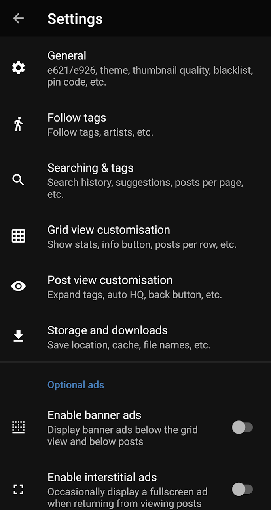

e621 客户端避坑：我踩过的四个常见翻车点
刚装完 e621 客户端就遇到首页空白、搜索无结果？黑名单挡住了想看的内容？本文把四个新手最容易踩的坑逐个拆解，从症状到解法一次说清。
开头：装好就翻车，我以为这软件坏了
第一次装 e621官网 配套的客户端 The Wolf's Stash 时，我以为自己遇到了个半成品——首页空的、搜索常用标签一片空白、收藏按钮点了没反应。反复卸载重装三次，甚至换了手机，问题还是一样。后来才发现，这软件看着简单，其实藏了好几个让新手一脸懵的默认行为。
下面这四个坑，是我翻遍了才搞明白的。如果你也遇到类似情况，别急着重装，先看看是不是下面这条。
坑一：首页全是空白？你的客户端可能连错了站
症状
装好之后打开，首页内容"不对劲"——要么翻不到几页就到底，要么搜索明明存在的标签直接提示没有结果。我当时搜了个热门标签，结果一屏空。
原因
这是新版客户端的默认站点设置坑。新版本默认连的是 e926.net，这是 e621 的全年龄镜像站，内容本身就比主站少很多。相当于你拿着 e621 的使用习惯去逛一个被过滤过的世界，自然觉得"这软件没内容啊"。
解法
打开设置，找到 General 分组里的 Change site / host 一项，把默认的 e926.net 改成 e621.net，返回首页刷新一下——内容量肉眼可见地变化。两个站账号通用，切过去不需要重新登录，设置页里的黑名单和过滤规则也都会保留。
如果你本来就只想看全年龄内容，那保持 e926 不动就行。但只要你感觉"内容不对"，切站是第一步要排查的，不是重装。

坑二：黑名单挡住了想看的内容？规则方向搞反了
症状
黑名单功能很贴心，命中规则的帖子直接从结果里移除。但我之前设了一条屏蔽马类的规则，结果想看的也一起没了——明明标签里标了"但带 feral 的放行"，还是被挡了。
原因
黑名单规则用加减号表示方向：减号 — 是"挡"，加号 + 是"留"。我当时写规则时把两者搞混了，把"例外条件"写成了"额外屏蔽"。更隐蔽的是，多标签匹配有个细节——— feline, inside 是同时带这两个标签才隐藏（all of），+ canine, equine 是只要带其中任一就放行（any of）。搞不清楚这个逻辑，规则怎么试都不对。
还有一种情况：站点侧账号黑名单没同步。客户端支持把本地规则同步到站点账号，如果两边没对上，你以为加了例外条件的帖子，在另一端其实还是被挡的。
解法
具体规则写法可以查e621文档，那里面讲得比我详细多了。先确认标签拼写没错，再逐行检查规则方向——减号开头都是"挡"的标签，加号开头都是"留"的例外。如果规则本身没问题，检查一下站点侧的黑名单同步状态。别一下子叠几十条规则，每条都参与匹配，堆多了会拖慢网格渲染速度，按需精简反而更有效。
坑三：登录之后又掉了？密钥别只存在剪贴板
症状
收藏、投票按钮刚能用了，过几天发现又没反应。重启客户端、清理应用数据之后，登录状态直接丢了。
原因
客户端登录用的是用户名加 API 密钥，密钥是一次性生成的长字符串，粘贴的时候容易不小心带进首尾空格——当时看起来是粘贴成功了，实际认证偶尔会飘。另外，客户端更新或清理应用数据会把本地缓存清掉，登录信息也就跟着没了。
历史上还出现过站点接口侧的临时故障，全用户同时认证报错的那种。那时候不是你密钥错了，是站点自己在崩。
解法
密钥生成后单独存一份到备忘录里，别只放在剪贴板。粘贴到客户端时仔细看一眼首尾有没有多余空格。更新客户端之前记一下自己有没有登录，更新完如果掉了重填一次就行。如果突然全挂了，先去查一下是不是站点侧出问题，别自己瞎折腾。
还有个小细节：精简版客户端一样能登录，安装包从e621下载拿就行。精简版只是去掉了谷歌依赖，登录功能完整，担心隐私的朋友不用纠结。
坑四：整本下载失败？不是网络就是体积
症状
追连载的 Pool 想用整本下载一键收完，要么中途断了几页，要么大合集直接失败闪退。手动一页页存又慢又容易漏。
原因
整本下载是按池内页序拉取的，中途断了不会自动续完已完成的部分——重新发起下载会覆盖或跳过已完成文件。个别页下载失败可能是网络抖动或单页资源问题，体积过大的合集则可能触发存储或闪退类问题。手动逐页保存还容易搞乱顺序、漏页。
解法
整本下载失败后直接重新发起，已完成的文件按命名规则处理，不会丢。个别失败的单页从详情页手动补存就行。遇到超大合集，先拆分批次，或者检查一下剩余存储空间和网络状态。订阅池功能可以收新页通知，连载完结时再整本收一次最干净。
防坑清单（速查版）
- 首页空白先查站点：设置 → General → Change site，从 e926 切回 e621 是最常见的新手卡壳点。
- 黑名单规则逐行审：减号挡、加号留；多标签 all of 和 any of 的区别别搞混。
- 密钥存好别只靠粘贴板：首尾空格容易带错，客户端更新后要重新填。
- 整本下载失败直接重发：会自动处理已完成文件，不用手动删缓存。
- 全用户认证报错先等一等：大概率是站点接口临时故障，不是你密钥的问题。
知道这些坑之后，这软件其实相当省心——客户端体验流畅、搜索功能强大、黑名单贴心。资料的开源备份也做了三份，GitHub、Gitee、GitCode 各放一份，哪天主站挂了也不怕。我现在已经把上面的坑都绕过去了，用起来很顺手。